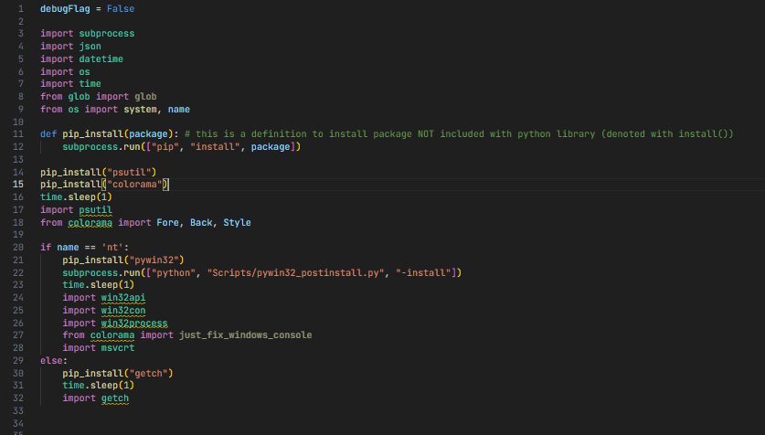

ffmpeg-parallel
Python script where ffmpeg will broke a video into 2 parts, and encode it simultaneously to their own cpu affinity to avoid system crash, and speed up encoding.
ytdlp-guided-cli
Command line interface (CLI), guided walkthrough of using yt-dlp downloader.
This Website!
This website has been made from scratch using HTML, CSS and JavaScript. No website builder used in the making of this website.